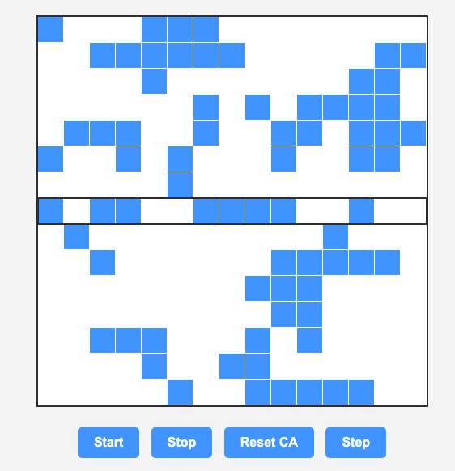

There are many ways to automatically generate music. In this project, I implemented two different approaches: Markov chains and cellular automata. The Markov chain controls the pitch of each note, while the cellular automaton generates the rhythm. Together, they form a system that produces structured but unpredictable musical sequences.
When starting this project, I was particularly interested in using cellular automata, but I did not want to directly map different cells or patterns to specific pitches. Instead, I decided to use cellular automata to control rhythm, while using a Markov chain to generate pitch. This allowed each system to focus on a different musical parameter, making the overall structure simpler while still producing varied results.
To generate pitch, I used a learned Markov chain. The system begins with a training melody, which is used to build an n-th order model. By default, the training melody is Twinkle Twinkle Little Star, but the user can provide their own sequence of notes. The model then uses this data to predict the next note based on the previous n notes.
Higher-order Markov chains allow the system to “remember” longer patterns, making the generated music more closely resemble the training melody. Lower-order chains, on the other hand, produce more variation but less structure. This creates a tradeoff between predictability and randomness.
Rhythm is generated using a two-dimensional cellular automaton. The grid evolves over time according to a set of rules, such as Conway’s Game of Life. I implemented several different rule sets to allow for variation in behavior.
At each step, the system takes the middle row of the grid and maps it to a rhythm pattern. Active cells correspond to notes, while inactive cells represent rests. The number of neighboring cells determines the duration of each note, producing a range of rhythmic values.

The cellular automaton grid. The highlighted middle row is used to generate rhythm, where active cells trigger notes and inactive cells create rests.
Through testing, I noticed that the choice of training melody has a significant impact on the output. Using a highly repetitive melody like Twinkle Twinkle Little Star often results in sequences that sound very similar to the original. When the training data is changed, the output becomes more varied and less predictable.
I also expected the cellular automaton to produce highly chaotic rhythms, but in practice the patterns felt more structured than anticipated. This may be due to the relatively slow tempo, as well as the ability to visually observe the grid before the rhythm is played. Additionally, the choice of rules gives the user some control over the resulting patterns.
Overall, this project demonstrates how relatively simple systems can produce surprisingly structured musical output. Markov chains introduce learned patterns and memory, while cellular automata provide evolving rhythmic structure. Combining the two creates a system that balances randomness with recognizable patterns, highlighting how rule-based processes can generate music that feels both organized and dynamic.